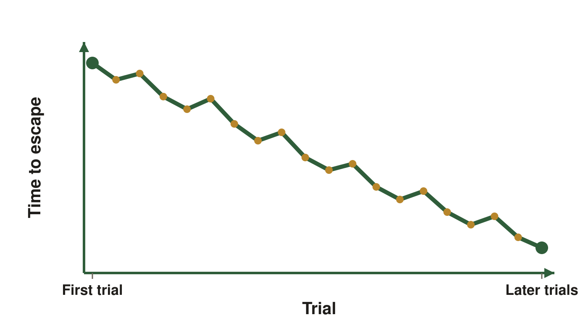
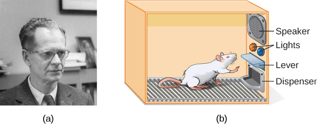
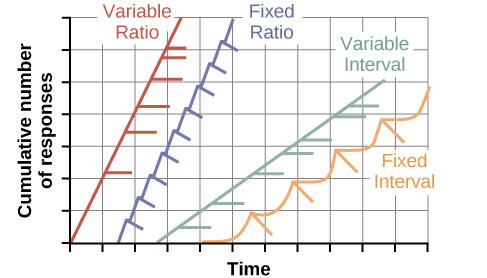

Operant conditioning. These are the same figures as in your Class Notes, in the same order. If a figure in your notes shows as a gray box, use this page instead.
Slide 5. Thorndike's Puzzle Box

Escape time across trials. A schematic, not measured data, so the axes carry no values, only First trial and Later trials.
Slide 7. Skinner and the Operant Chamber (continued)

(a) B. F. Skinner. (b) The chamber, with the speaker, lights, lever and dispenser labeled; the recorder that counts responses is not drawn. OpenStax, Psychology 2e, Figure 6.10, CC BY 4.0. Credit (a): modification of work by “Silly rabbit”/Wikimedia Commons.
Slide 39. Reading the Cumulative Record (continued)

Illustrative shapes for comparing the four schedules, not measured data, so neither axis carries values. OpenStax, Psychology 2e, Figure 6.13, CC BY 4.0